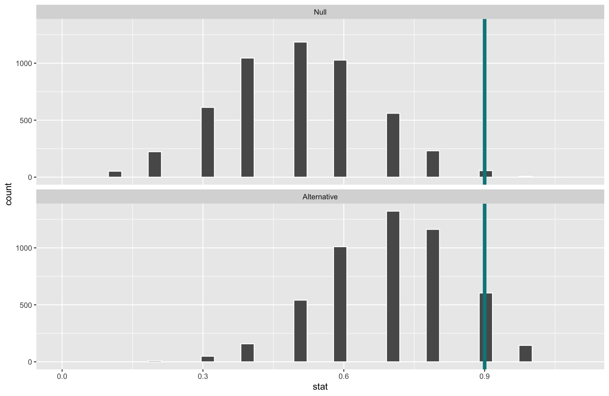
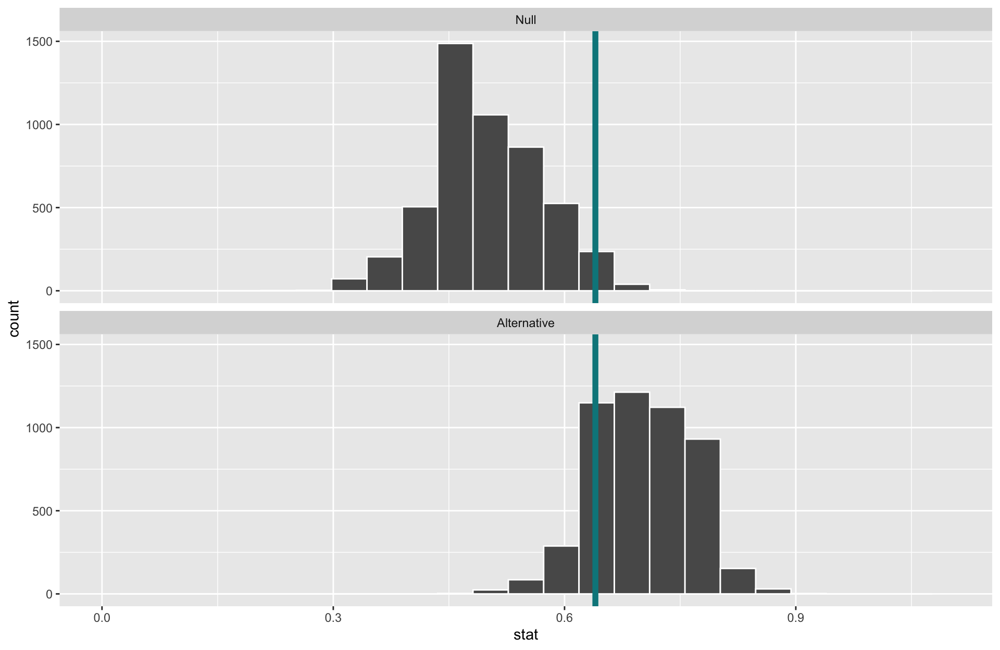

Discuss and learn to compute the power of a hypothesis test
Hypothesis Testing Framework
Have two competing hypotheses:
Null Hypothesis \((H_0)\): “Dull” hypothesis, status quo, random chance, no effect…
Alternative Hypothesis \((H_a)\): The researchers’ conjecture.
Must first take those hypotheses and translate them into statements about the population parameters so that we can test them with sample data.
Example:
\(H_0\): ESP doesn’t exist.
\(H_a\): ESP does exist.
Then translate into a statistical problem!
Q: Using formal statistical/mathematical notation, how should we define these?
\(p\) =
\(H_0\):
\(H_a\):
New Example: Swimming with Dolphins
In 2005, researchers Antonioli and Reveley posed the question “Does swimming with the dolphins help depression?” They recruited 30 US subjects diagnosed with mild to moderate depression. Participants were randomly assigned to either the treatment group (swimming with dolphins) or the control group (swimming without dolphins). After two weeks, each subject was categorized as “showed substantial improvement” or “did not show substantial improvement”.
Here’s a contingency table of improve and group.
dolphins %>%count(group, improve)
group improve n
1 Control no 12
2 Control yes 3
3 Treatment no 5
4 Treatment yes 10
\(H_0\):
\(H_a\):
Snapshot of the data:
group improve
1 Control yes
2 Treatment no
3 Control no
4 Treatment yes
5 Control no
6 Control no
7 Treatment yes
8 Control no
Q: How might we generate the null distribution for this scenario?
Penguins Example
Let’s return to the penguins data and ask if flipper length varies, on average, by the sex of the penguin.
Research Question: Does flipper length differ by sex?
# A tibble: 2 × 2
sex avg_length
<fct> <dbl>
1 female 197.
2 male 205.
\(\rightarrow\) Our test statistic is: 7.1424
Generate the null distribution by simulating many data sets where gender is shuffled (code not shown for brevity), and visualize null sampling distribution compared to our test statistic:
Interpretation of\(p\)-value: If the mean flipper length does not differ by sex in the population, the probability of observing a difference in the sample means of at least 7.14 mm (in magnitude) is equal to 0.
Conclusion: These data represent evidence that flipper length does vary by sex.
Now: A closer look at the conclusions of a hypothesis test
Hypothesis Testing: Decisions, Decisions
Once you get to the end of a hypothesis test you make one of two decisions:
P-value is small.
I have evidence for \(H_a\). Reject \(H_0\).
P-value is not small.
I don’t have evidence for \(H_a\). Fail to reject \(H_0\).
Sometimes we make the correct decision. Sometimes we make a mistake.
Hypothesis Testing: Decisions, Decisions
Let’s create a table of potential outcomes on the board.
\(\alpha\) = prob of Type I error under repeated sampling = prob reject \(H_0\) when it is true
\(\beta\) = prob of Type II error under repeated sampling = prob fail to reject \(H_0\) when \(H_a\) is true.
Hypothesis Testing: Decisions, Decisions
We should set \(\alpha\) level beforehand.
Use \(\alpha\) to determine “small” for a p-value.
P-value issmall\(< \alpha\).
\(\rightarrow\) I have evidence for \(H_a\). Reject \(H_0\).
P-value isnotsmall\(\geq \alpha\).
\(\rightarrow\) I don’t have evidence for \(H_a\). Fail to reject \(H_0\).
Hypothesis Testing: Decisions, Decisions
Open Question: How do I select \(\alpha\)?
Will depend on the convention in your field (0.05 is common).
Want a small \(\alpha\) and a small \(\beta\). But they are related.
The smaller\(\alpha\) is the larger \(\beta\) will be.
Choose a lower \(\alpha\) (e.g., 0.01, 0.001) when the Type I error is worse and a higher \(\alpha\) (e.g., 0.1) when the Type II error is worse.
Q: What are some examples of when Type I errors are worse than Type II errors? Examples when the opposite is true?
Hypothesis Testing: Decisions, Decisions
Open Question: How do I select \(\alpha\)?
Will depend on the convention in your field (0.05 is common).
Want a small \(\alpha\) and a small \(\beta\). But they are related.
The smaller\(\alpha\) is the larger \(\beta\) will be.
Q: Can’t easily compute \(\beta\) (probability of failing to reject a false null hypothesis). Why?
Important related concept:
Power = probability reject \(H_0\) when the alternative is true.
Q: Why is power important when designing an experiment?
Example
Suppose we want to test whether someone can detect AI-generated text from real text. We show a participant 10 short passages that are each either written by a human or an AI agent, and ask them to identify which are written by AI. Suppose the participant’s true (long-run) detection rate is 70%.
\(H_0\):
\(H_a\):
When \(\alpha=0.05\), they need 9 or more correct for a small enough p-value to reject \(H_o\).
When \(\alpha=0.05\), the power of this test is 0.15.
Why is the power so low? Our power is very much not “unlimited” :(
What aspects of the test could we change to increase the power of the test?
Example
Suppose we want to test whether someone can detect AI-generated text from real text. We show a participant 10 50 short passages that are each either written by a human or an AI agent, and ask them to identify which are written by AI. Suppose the participant’s true (long-run) detection rate is 70%.
What will happen to the power of the test if we increase the sample size?

Increasing the sample size narrows the sampling distributions and increases the power.
When \(\alpha\) is set to \(0.05\) and the sample size is now 50, the power of this test is 0.87.
Example
Suppose we want to test whether someone can detect AI-generated text from real text. We show a participant 10 50 short passages that are each either written by a human or an AI agent, and ask them to identify which are written by AI. Suppose the participant’s true (long-run) detection rate is 70%.
What will happen to the power of the test if we increase\(\alpha\) to 0.1?

Increasing \(\alpha\) increases the power.
Decreases \(\beta\).
(But remember, also increasing our chances of false alarms)
When \(\alpha\) is set to \(0.1\) and the sample size is 50, the power of this test is 0.98!
Example
Suppose we want to test whether someone can detect AI-generated text from real text. We show a participant 10 50 short passages that are each either written by a human or an AI agent, and ask them to identify which are written by AI. Suppose the participant’s true (long-run) detection rate is 70%80%.
What will happen to the power of the test if the participant is even better at detecting AI?
Effect size: Difference between true value of the parameter and null value.
Often standardized.
Increasing the effect size increases the power.
When \(\alpha\) is set back to \(0.05\), the sample size is 50, and the true probability of detecting AI is 0.8, the power of this test is 0.998.